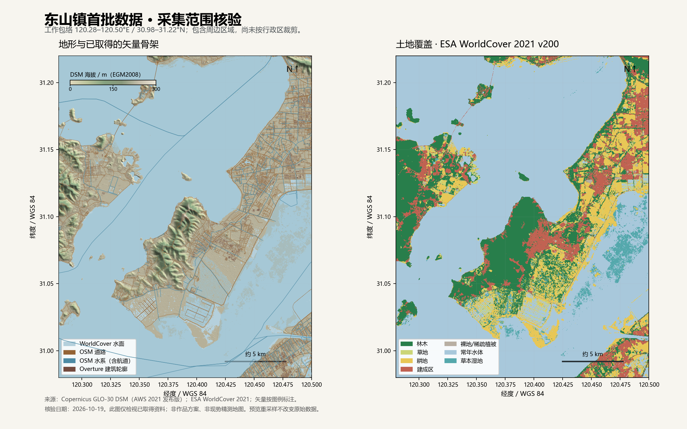

DONGSHAN · ACQUIRED DATA / 2026-10-19
东山镇，先把真实地理留作底稿。
首批资料已落盘并完成文件与内部几何核验，供后续范围审查、骨架梳理和制图综合使用。
地形、土地覆盖、地方图文复用10月16日文件并复核；OSM与Overture为10月19日新采集。
30 m / 10 m地形 / 土地覆盖量级
3,446采集包络内道路要素
60,873Overture建筑面 · 聚合输入
8 页 / 18 图地方图文研究参考

实际数据范围核验图。WGS84 120.28–120.50°E / 30.98–31.22°N，包含周边区域；不代表行政边界或最终作品裁切范围。
这批资料能提供什么
| 数据入口 | 本批数量 / 规格 | 后续作用 |
|---|
| 地形 DSM | 原网格 793 × 865；约 30 米级 | 山体、坡地与聚落高低关系；另附 4 种质量层 |
| 土地覆盖 | 原网格 2640 × 2880；约 10 米级 | 林木、耕地、建成区、水面等大类 |
| OSM 道路 | 3,446 个要素 | 路网与桥头关系；保留主次标签，另有道路点 |
| OSM 水系 | 381 个水系对象；2,162 个水面 | 湖面、港渠、溪流、坝闸及航道；水道另存一层 |
| OSM 地点与设施 | 366 个要素 | 聚落、校园和其他地点；面、点按源保留 |
| OSM 建筑 | 330 个要素（329 面、1 点） | 来源标签与局部建筑语义参考 |
| Overture 建筑 | 60,873 个建筑面 | 聚落密度、屋顶朝向与后续住宅聚合输入；与 OSM 独立保存 |
| 地方图文参考 | 8 个页面、18 张图 | 陆巷、街巷港道、园林与古建形态；含惠和堂平面/俯瞰 |
工作包中道路、水系、地点、建筑与行政候选分层保存；EPSG:32651，单位米。原始坐标、来源标签与紧凑源文件另存。六万条建筑轮廓用于分析聚落肌理，最终显示数量由制图综合决定。
进入表达设计前需要知道
- 采集包络含西山及周边区域；它不是东山镇行政边界或最终作品范围。OSM 行政关系仅作候选，需另行核准。
- DSM 取自 AWS 2021 发布版，瓦片观测时段约 2011–2014；含植被和建筑。WorldCover 描述 2021 年，不能当作 2026 年现状。
- Overture 这 60,873 条轮廓以及 OSM 建筑均没有高度/层数。建筑轮廓仅作聚落分析和综合底稿，不对应最终渲染数量；两来源不可直接相加。
- 部分地形低于 −10 米，尚未判明真实洼地或源问题；已保留源值和待复核掩膜。DSM 为 EGM2008，不能直接套用太湖镇江吴淞基面水位。
- WorldCover 不区分茶园/果园，InputQuality 尚未取得；重点古建与港道仍需可靠落位。参考图尚未确认开放使用许可，惠和堂平面无比例尺/坐标，不作精测图。
本批尚未进行住宅聚合、水系筛选、艺术化地形或三维建模。OSM专题层有交叉，Overture也含OSM来源建筑，各层数量不能直接相加。10条行政关系中未展开成员均为子区关系，不作为完整递归行政图。
检查依据
综合读取与几何检查 · 文件与SHA-256清单 · 工作包全属性比较 · 重点对象候选表
地形来源与质量 · 土地覆盖来源与质量 · OSM采集说明 · Overture采集说明 · 逐图来源与用途